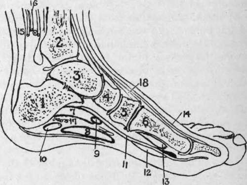

The Ankle And Foot. Surface Anatomy. Continued
Description
This section is from the book "Surgical Anatomy", by John A. C. MacEwen. Also available from Amazon: Surgical Anatomy.
The Ankle And Foot. Surface Anatomy. Continued
The superficial veins are most numerous on the dorsum, where they form a plexus, particularly about the internal malleolus, while the parts of the sole which touch the ground are comparatively free from them. Over the instep there are numerous veins, which frequently dilate in varicosity of the limb. On the dorsum the veins form an arch, from the extremities of which the saphenous veins arise.
The lymphatics of the foot form a fine plexus, the chief vessels being situated on the dorsum, and particularly on the inner side, whence they ascend near the internal saphenous vein to the inguinal lymphatic glands. A few of the external lymphatics follow the short saphenous vein to the popliteal glands, but the majority cross the leg, particularly behind and above the knee, to join the inner set, a few crossing in front over the tibia. Thus, septic wounds of the inner side of the foot will probably affect the inguinal glands, while those of the outer side may affect either the popliteal or inguinal set. The skin of the foot derives sensation from branches of the anterior tibial, two saphenous, external and internal plantar and musculo-cutaneous nerves. Pacinian bodies and end bulbs are found on their terminations, and while tactile sensation is not acute, the sensations of pain, pressure, and temperature are, and tickling is particularly sharply felt. The skin of the dorsum, however, is much less sensitive than that of the sole. Reference has already been made to pain referred to the foot from bowel and other distant affections. Perforating ulcer of the foot is believed to be due to a neurosis, is frequently met with in locomotor ataxy, rarely in diabetes, and generally affects the ball of the great toe, and less frequently the heel.
Fig. 42. -Outline Diagram of Longitudinal Section of Foot.
(After Braune.)
I | Os calcis. | 7. | Flex, accessorius. | 13. | Flex. brev. hallucis. |
2. | Tibia. | 8. | Flex. brev. dig. | 14. | Ext. long, hallucis. |
3. | Astragalus. | 9. | Flex, commun. dig. | 15. | Tendo Achillis. |
4. | Scaphoid. | 10. | Adduct. min. dig. | 16. | Post, tibial vessels and nerve. |
5. | Int. cuneiform. | 11. | Flex. long, hallucis. | 17. | Ext. plantar vessels and nerve. |
6. | First metatarsal. | 12. | Accessorius. | 18. | Tibial, antic. |
On the dorsum the fascia is divided into superficial and deep layers, both of which are poorly developed, and of little importance. The superficial layer is continuous with the anterior annular ligament, and the deep layer covers in the extensor brevis and interossei. The plantar fascia, on the other hand, consists of a strong central portion, running forward from the tuberosity of the os calcis, to divide into five slips to the bases of the toes, and two lateral portions, which are much less well developed, and join the dorsal fascia. The portion on the outer side forms a stout band, the calcaneo-metatarsal ligament between the tuberosity of the os calcis and the base of the fifth metatarsal. An intermuscular septum passes up on either side of the flexor brevis digitorum, separating it from the abductors of the great and little toes. The plantar fascia helps to support the arch of the foot, and in talipes cavus, where the foot is greatly arched, the central band may be strongly contracted, necessitating section before the condition can be remedied. Such section is best performed about 1 inch in front of the attachment to the os calcis, where the fascia is narrowed, the scalpel being introduced from the inner side. The density of the plantar fascia tends to prevent the pointing of deep abscesses in the sole, although occasionally such an abscess may present through a small aperture in the fascia normally occupied by fat, and then spread subcutaneously and point. Generally such abscesses become large, cause considerable destruction of tissue and pain, and finally point on the dorsum or about the ankle. At the ankle the deep fascia is strengthened, and forms the annular ligaments -anterior, internal, and external. The anterior is in two portions-an upper running between the malleoli, which binds down the tendons of the tibialis anticus and extensors of the toes, the former surrounded by a synovial sheath, and a lower attached externally to the os calcis, and then extending inwards across the dorsum and splitting into two portions, the upper inserted into the internal malleolus, and the lower to the plantar fascia. Under this lower portion are three synovial sheaths-an inner for the tibialis anticus, a middle for the extensor proprius hallucis, and an outer for the extensor communis and peroneus tertius. The internal annular ligament extends from the internal malleolus to the tuberosity of the os calcis. Under it pass the tibialis posticus, flexor longus digitorum, and flexor longus hallucis (each enclosed in a separate synovial sheath, that for the tibialis posticus being closely related to the joint), together with the posterior tibial vessels and nerve. The external ligament stretches from the external malleolus to the os calcis. Under it pass the peronei longus and brevis in a single synovial sheath. In addition to partial rupture of the ligaments, sprains of the ankle are frequently associated with damage to the synovial sheaths, causing long-standing trouble.
Rupture of the tendo Achillis has already been referred to. The tendons of the tibialis posticus, and long and short peronei, may also be ruptured by violence, and in some cases their sheaths may also be torn, allowing of displacement of the tendons, which may appear in front of the malleoli. The peroneus longus tendon is said to be more frequently displaced than any other in the body. The tibialis anticus tendon may be tenotomized below and in front of the ankle, as it crosses the scaphoid bone, the tenotome being introduced beneath it from without inwards. The tibialis posticus may be similarly treated, either just above the internal malleolus, where it is subcutaneous, or between the internal malleolus and tuberosity of the scaphoid. As these tendons run in sheaths, their section is generally undesirable, the cut ends tending to adhere to the synovial sheath, and movement thereby being much impaired. Their section in cases of talipes equino-varus is generally not only useless, but harmful.
Continue to: